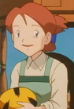

|
Grandine |
- Fairy Tail
- Fairy Tail (2014)
- Fairy Tail: Final Season
|
Gardine is the sky dragon and foster mother of Wendy Marvell. She seems to enjoy poking at people's sensitive areas. She is unafraid of making other dragon unhappy. |
 |
Izumi Curtis |
- Fullmetal Alchemist
- Fullmetal Alchemist: The Conqueror of Shamballa
- Fullmetal Alchemist: Brotherhood
- Fullmetal Alchemist: Brotherhood Specials
- Fullmetal Alchemist: Brotherhood - 4-Koma Theater
|
Izumi Curtis is the teacher of Edward and Alphonse Elric. She can be quite violent when punishing or sparring. She is married to Sig Curtis. She is very open-minded and quite curious. |
|  |
Kimie |
|
Kimie is the wife of Mr. Shellby and lives in the town of Eggseter. She hosted their town's Extreme Pokemon Race. |
| |
Miranda |
- Pokemon Advanced Generations
|
Miranda is the caretaker of Princess Sara. iranda was shown to be knowledgeable of the Mirage Kingdom's folklore and the role of Togepi in its monarchy. |
 |
Porlyusica |
- Fairy Tail
- Fairy Tail (2014)
- Fairy Tail: Final Season
|
Porlyusica is a lonely old healer living in a forest outside of Magnolia town. She is withdrawn and reclusive because she doesn't like humans. She is the apocathary for Fairy Tail. |
| |
Shelly |
- Pokemon Advanced Generations
|
Shelly is one of the Team Aqua admin of Team Aqua. She is very faithful to Team Aqua. She and Tabitha, Team Magma Admin, often exchanged insults and destroy the opposition in battles. She is tactical in her apeoach and would retreat when missions go wrong. |


.jpg)